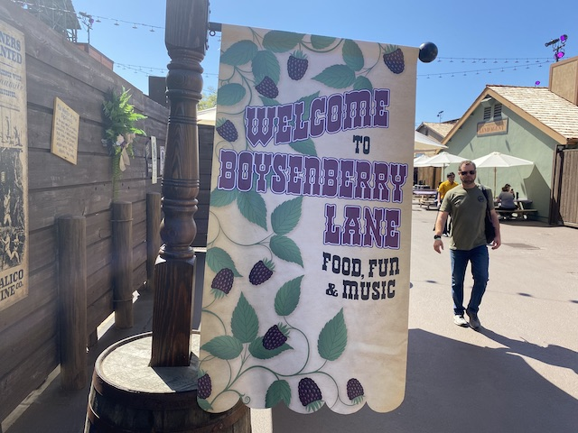
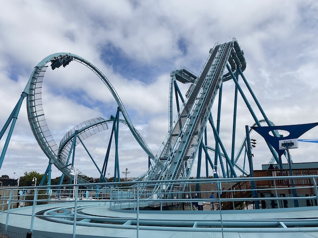
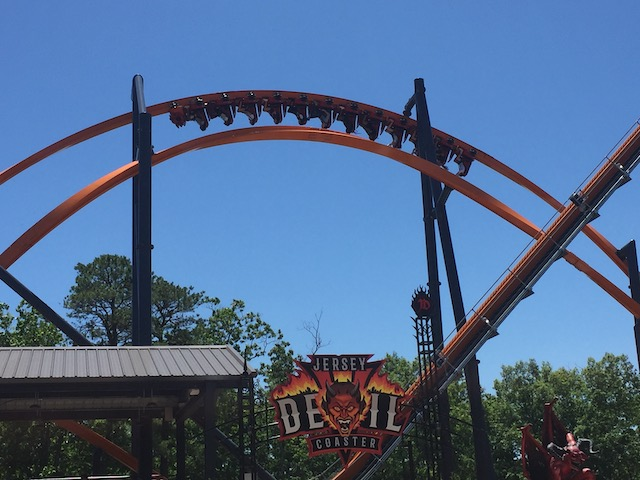

|
|
 |
East Coast Trip 2021 - Columbus Zoo & Waldameer The East Coast Trip us to two new places we haven't been before. The Columbus Zoo & Waldameer. And luckily, both of these places are a ton of fun. Check out a kickass wooden coaster, as well as the rest of the fun that Waldameer has to offer. Also, the Columbus Zoo is a fantastic zoo as well. Check those animals out and the credit there as well. |
 |
East Coast Trip 2021 - Kings Island The East Coast Trip continues and now we're at Kings Island. Since my last visit, this park added a freaking B&M Giga Coaster. So yeah, we had to check that out (they also demolished two other coasters). Check out a lot of fun Orion goodness, which exceeded my expectations. But also see the other fun coasters, Skyline Chilli, and other fun at the park. |
 |
East Coast Trip 2021 - Cedar Point All right. We're back at America's Roller Coast, Cedar Point. One of the biggest and most popular amusement parks in America. Check out two of the countries best roller coasters, as well as several other great roller coasters. Hell, see Top Thrill Dragster before its big accident. Check all that out and more in this update. |
|  | Knotts Boysenberry Festival 2022 For the first time since the COVID-19 Pandemic, our favorite event at Knotts, the Boysenberry Festival has returned to the park. How is our favorite food festival doing this year? Check out a lot of great food in this update, as well as some cool coasters (Even see Xcelerator briefly open) as well as some labor violations as well (not so fun). |
 |
East Coast Trip 2021 - Dorney Park We're back at one of the Cedar Fair parks that needs a lot more love, Dorney Park. Despite no new coasters in 13 years, we still had a lot of fun here. Check out the major coasters and more fun in this update. |
|  |
So Sea World San Diego was supposed to open up a coaster for 2020, but that didn't wind up opening until Spring of this year (Sorry the update is so late). And of course, we had to ride it and see how it is. Check out Emperor, as well as a lot of other fun at Sea World San Diego and around San Diego. |
 |
East Coast Trip 2021 - Casino Pier & Playland's Castaway Cove We're on the Jersey Shore, and this update shows off the two best seaside parks the Jersey Shore has to offer. Check out a really fun and wacky coaster from S&S Power, along with some crazy food, a really cool scrambler, a nice beach atmosphere, and even some pretty lights from Atlantic City. |
 |
Incrediblecoasters Winter 2022 All right. Time for another update highlighting or winter visits to both Six Flags Magic Mountain and Knotts Berry Farm. Check out some of the pretty lights to come with Holiday in the Park, as well as see some new paint jobs, some go-karting wackiness, and take a final ride on Montezoomas Revenge before it gets its makeover. |
|  | East Coast Trip 2021 - Six Flags Great Adventure The trend of this trip hitting all of the best coasters in America continues as we now head over to Six Flags Great Adventure, home to one of our favorite coasters of all time. So naturally, there's gonna be a lot of El Toro here. On top of that, check out some of the other coasters at the park including their new for 2021 RMC, Jersey Devil. There's also other fun rare rides and plenty of fun found in this update. |
 |
All right. Time for the 2021 Halloween Season (I know this update is very late. Playing catch-up is a bitch, especially with how busy life is). But we did quite a lot last Halloween. Check out our fun at Knotts Scary Farm, Halloween Horror Nights, Fright Fest, Castle Dark, and even check out some bonus time over at Belmont Park. |